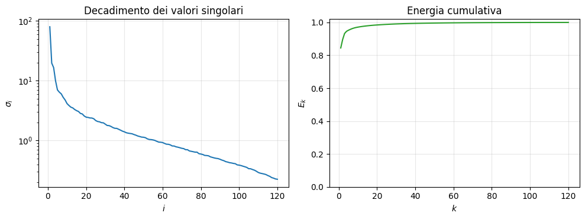
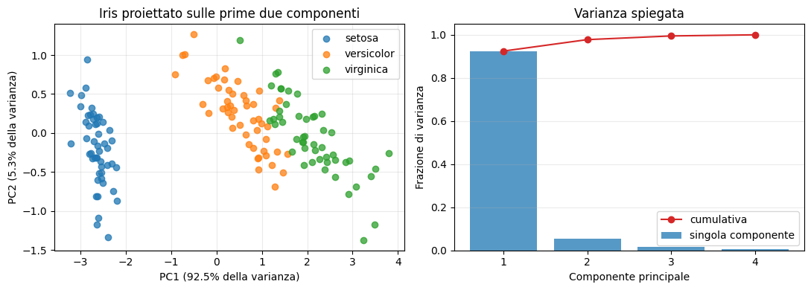
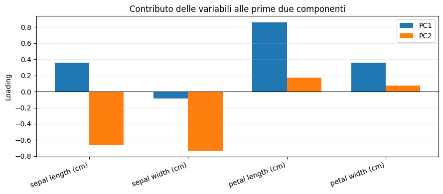

Fattorizzazioni che diagonalizzano: autovalori e valori singolari#
1. Fattorizzazione agli autovalori: teoria e NumPy#
Questo notebook introduce la teoria essenziale e applica la decomposizione alla matrice dell’esempio.
Autovalori e autovettori
Dato un operatore lineare rappresentato da una matrice quadrata \(A\in\mathbb{R}^{n\times n}\), un numero \(\lambda\) è un autovalore se esiste un vettore non nullo \(v\) tale che
Il vettore \(v\) è l’autovettore associato a \(\lambda\). La trasformazione \(A\) non cambia la direzione di \(v\): lo moltiplica soltanto per il fattore \(\lambda\).
Riscrivendo l’equazione come \((A-\lambda I)v=0\), esiste una soluzione non nulla soltanto se \(A-\lambda I\) è singolare. Pertanto gli autovalori sono le radici del polinomio caratteristico
Per ogni autovalore, gli autovettori si ottengono risolvendo \((A-\lambda I)v=0\).
Diagonalizzazione
Se \(A\) possiede \(n\) autovettori linearmente indipendenti, è diagonalizzabile. Ponendo
si ha \(AV=V\Lambda\) e quindi
Una matrice con autovalori tutti distinti è diagonalizzabile. La diagonalizzabilità può comunque verificarsi anche con autovalori ripetuti, purché esistano abbastanza autovettori indipendenti.
import numpy as np
A = np.array([[ 2., 1., 1.],
[ 4., -6., 0.],
[-2., 7., 2.]])
A
array([[ 2., 1., 1.],
[ 4., -6., 0.],
[-2., 7., 2.]])
Per questa matrice il polinomio caratteristico è \(p_A(\lambda)=\lambda^3+2\lambda^2-22\lambda+16\). NumPy può calcolarne i coefficienti e le radici numeriche:
coefficienti = np.poly(A)
print("Coefficienti del polinomio caratteristico:", coefficienti)
print("Radici:", np.roots(coefficienti))
Coefficienti del polinomio caratteristico: [ 1. 2. -22. 16.]
Radici: [-6.06347233 3.25206391 0.81140842]
Calcolo numerico con NumPy
np.linalg.eig(A) restituisce gli autovalori e una matrice V le cui colonne sono gli autovettori corrispondenti. L’ordine degli autovalori non è prestabilito; anche il segno o la fase di un autovettore possono cambiare senza modificarne il significato.
autovalori, V = np.linalg.eig(A)
Lambda = np.diag(autovalori)
print("Autovalori:\n", autovalori)
print("\nAutovettori (in colonna):\n", V)
Autovalori:
[-6.06347233 3.25206391 0.81140842]
Autovettori (in colonna):
[[-0.01195857 0.73345874 -0.47148436]
[ 0.75362427 0.3171006 -0.27687922]
[-0.65719666 0.60123663 0.83728155]]
A_ricostruita = V @ Lambda @ np.linalg.inv(V)
print("A ricostruita:\n", np.real_if_close(A_ricostruita))
print("\nVerifica A = V @ Lambda @ inv(V):",
np.allclose(A, A_ricostruita))
print("Verifica A @ V = V @ Lambda:",
np.allclose(A @ V, V @ Lambda))
A ricostruita:
[[ 2.00000000e+00 1.00000000e+00 1.00000000e+00]
[ 4.00000000e+00 -6.00000000e+00 4.58049147e-16]
[-2.00000000e+00 7.00000000e+00 2.00000000e+00]]
Verifica A = V @ Lambda @ inv(V): True
Verifica A @ V = V @ Lambda: True
Caso delle matrici simmetriche
Se \(A\) è reale e simmetrica, il teorema spettrale garantisce autovalori reali e una base ortonormale di autovettori. È preferibile usare np.linalg.eigh(A) e si ottiene \(A=V\Lambda V^T\), perché \(V^{-1}=V^T\). Per una matrice generale, invece, gli autovalori e gli autovettori possono essere complessi.
2. Decomposizione ai valori singolari (SVD)#
La Decomposizione in Valori Singolari (Singular Value Decomposition o SVD) è una delle fattorizzazioni più importanti dell’algebra lineare numerica. È definita per ogni matrice, anche rettangolare o di rango non massimo, e permette di descrivere in modo trasparente:
l’azione geometrica di una matrice;
rango, nucleo e immagine;
norme e condizionamento;
approssimazioni a rango basso e compressione dei dati.
2.1 Richiamo: ortogonalità#
Due vettori \(x,y\in\mathbb{R}^n\) sono ortogonali se \(x^Ty=0\). Un insieme di vettori è ortonormale se i vettori sono ortogonali tra loro e hanno norma euclidea unitaria.
Una matrice quadrata \(Q\) è ortogonale quando le sue colonne formano una base ortonormale, cioè
Le trasformazioni ortogonali conservano prodotto scalare, norma 2, distanze e angoli:
import numpy as np
import matplotlib.pyplot as plt
theta = np.pi / 4
Q = np.array([[np.cos(theta), -np.sin(theta)],
[np.sin(theta), np.cos(theta)]])
x = np.array([2.0, -1.0])
print('Q^T Q =')
print(np.round(Q.T @ Q, 12))
print(f'||x||_2 = {np.linalg.norm(x):.6f}')
print(f'||Qx||_2 = {np.linalg.norm(Q @ x):.6f}')
Q^T Q =
[[ 1. -0.]
[-0. 1.]]
||x||_2 = 2.236068
||Qx||_2 = 2.236068
2.2 Teorema di esistenza della SVD#
Per ogni matrice reale \(A\in\mathbb{R}^{m\times n}\) esistono due matrici ortogonali
e una matrice rettangolare diagonale \(\Sigma\in\mathbb{R}^{m\times n}\) tali che
Ponendo \(p=\min(m,n)\), sulla diagonale di \(\Sigma\) compaiono i valori singolari ordinati:
Nella SVD completa le dimensioni sono:
matrice |
dimensione |
significato |
|---|---|---|
\(A\) |
\(m\times n\) |
matrice di partenza |
\(U\) |
\(m\times m\) |
vettori singolari sinistri |
\(\Sigma\) |
\(m\times n\) |
valori singolari sulla diagonale |
\(V\) |
\(n\times n\) |
vettori singolari destri |
Le colonne di \(U=(u_1,\ldots,u_m)\) e di \(V=(v_1,\ldots,v_n)\) sono basi ortonormali rispettivamente di \(\mathbb{R}^m\) e \(\mathbb{R}^n\).


SVD compatta
Se \(r=\operatorname{rank}(A)\), allora esattamente \(r\) valori singolari sono positivi:
Eliminando le colonne associate ai valori singolari nulli si ottiene la SVD compatta:
dove \(U_r\in\mathbb{R}^{m\times r}\), \(\Sigma_r\in\mathbb{R}^{r\times r}\) e \(V_r\in\mathbb{R}^{n\times r}\). Questa forma contiene tutta l’informazione necessaria a ricostruire \(A\).
Per ogni valore singolare positivo valgono le relazioni fondamentali
Quindi \(A\) trasforma il vettore unitario \(v_i\) nel vettore \(u_i\), moltiplicandone la lunghezza per \(\sigma_i\). Le direzioni \(v_i\) sono le direzioni principali nel dominio; le direzioni \(u_i\) sono le corrispondenti direzioni nel codominio.
2.3 Relazione con autovalori e autovettori#
Dalla SVD segue
Pertanto:
I valori singolari sono quindi le radici quadrate degli autovalori non negativi di \(A^TA\):
Questa relazione è utile teoricamente, ma in generale non conviene calcolare numericamente la SVD formando esplicitamente \(A^TA\): il condizionamento viene elevato al quadrato e si può perdere accuratezza.


# Esempio di SVD di una matrice rettangolare 3 x 2
A = np.array([[3.0, 1.0],
[1.0, 3.0],
[1.0, 1.0]])
# full_matrices=False restituisce la SVD ridotta
U, s, VT = np.linalg.svd(A, full_matrices=False)
Sigma = np.diag(s)
A_ricostruita = U @ Sigma @ VT
print('U =\n', np.round(U, 4))
print('Valori singolari =', np.round(s, 4))
print('V^T =\n', np.round(VT, 4))
print('Errore di ricostruzione =', np.linalg.norm(A-A_ricostruita))
print('U^T U =\n', np.round(U.T @ U, 12))
print('V^T V =\n', np.round(VT @ VT.T, 12))
U =
[[-0.6667 0.7071]
[-0.6667 -0.7071]
[-0.3333 0. ]]
Valori singolari = [4.2426 2. ]
V^T =
[[-0.7071 -0.7071]
[ 0.7071 -0.7071]]
Errore di ricostruzione = 1.2161883888976235e-15
U^T U =
[[1. 0.]
[0. 1.]]
V^T V =
[[ 1. -0.]
[-0. 1.]]
2.4 Rango, immagine e nucleo#
Se \(A\) ha rango \(r\), la SVD rende immediatamente visibili i suoi sottospazi fondamentali:
In aritmetica floating point non si verifica quasi mai se \(\sigma_i\) è esattamente zero: si confronta con una tolleranza dipendente da \(\sigma_1\), dalle dimensioni della matrice e dalla precisione di macchina.
2.5 Una applicazione: decomposizione diadica#
La SVD compatta può essere scritta come somma di matrici di rango uno:
Ogni termine \(\sigma_i u_i v_i^T\) descrive una componente indipendente della matrice. Le componenti sono ordinate dalla più importante alla meno importante in base alla grandezza dei valori singolari.
# Ricostruzione come somma di diadi
A_somma = np.zeros_like(A)
for i in range(len(s)):
diade = s[i] * np.outer(U[:, i], VT[i, :])
A_somma += diade
print(f'Dopo {i+1} termine/i: errore di Frobenius = '
f'{np.linalg.norm(A-A_somma, ord="fro"):.6f}')
Dopo 1 termine/i: errore di Frobenius = 2.000000
Dopo 2 termine/i: errore di Frobenius = 0.000000
SVD troncata e approssimazione a rango basso
Se conserviamo soltanto i primi \(k<r\) termini otteniamo
Il teorema di Eckart-Young-Mirsky afferma che \(A_k\) è la migliore approssimazione di rango al più \(k\) sia in norma 2 sia in norma di Frobenius:
Questa proprietà è alla base di compressione, riduzione dimensionale e filtraggio del rumore.
# Verifica numerica del teorema di Eckart-Young-Mirsky
B = np.array([[4., 1., 1., 0.],
[1., 3., 0., 1.],
[1., 0., 2., 1.],
[0., 1., 1., 1.]])
Ub, sb, VTb = np.linalg.svd(B, full_matrices=False)
print('Valori singolari:', np.round(sb, 4))
for k in range(1, len(sb)):
Bk = (Ub[:, :k] * sb[:k]) @ VTb[:k, :]
err2 = np.linalg.norm(B-Bk, 2)
errF = np.linalg.norm(B-Bk, 'fro')
teoricoF = np.sqrt(np.sum(sb[k:]**2))
print(f'k={k}: errore 2 = {err2:.4f} (sigma_{k+1}={sb[k]:.4f}), '
f'errore F = {errF:.4f} (teorico={teoricoF:.4f})')
Valori singolari: [5.0322 2.7962 2.2038 0.0322]
k=1: errore 2 = 2.7962 (sigma_2=2.7962), errore F = 3.5604 (teorico=3.5604)
k=2: errore 2 = 2.2038 (sigma_3=2.2038), errore F = 2.2041 (teorico=2.2041)
k=3: errore 2 = 0.0322 (sigma_4=0.0322), errore F = 0.0322 (teorico=0.0322)
2.6 Pseudoinversa mediante SVD#
Dalla SVD compatta \(A=U_r\Sigma_rV_r^T\) si definisce la pseudoinversa di Moore-Penrose:
dove
Se \(A\) è quadrata e invertibile, allora \(A^+=A^{-1}\). Per matrici di rango non massimo, i valori singolari nulli non vengono invertiti. In pratica si usa una tolleranza per decidere quali valori singolari trattare come nulli.
# Pseudoinversa di una matrice di rango non massimo
D = np.array([[1., 2., 3.],
[2., 4., 6.]])
Ud, sd, VTd = np.linalg.svd(D, full_matrices=False)
tol = max(D.shape) * np.finfo(float).eps * sd[0]
sd_inv = np.array([1/sigma if sigma > tol else 0.0 for sigma in sd])
D_piu = VTd.T @ np.diag(sd_inv) @ Ud.T
print('Valori singolari:', sd)
print('Rango numerico:', np.sum(sd > tol))
print('||D D+ D - D||_F =', np.linalg.norm(D @ D_piu @ D-D))
print('Confronto con np.linalg.pinv:', np.linalg.norm(D_piu-np.linalg.pinv(D)))
Valori singolari: [8.36660027e+00 4.32998615e-16]
Rango numerico: 1
||D D+ D - D||_F = 1.137640067256873e-15
Confronto con np.linalg.pinv: 1.0408340855860843e-17
2.7 Aspetti numerici#
Per una matrice densa \(m\times n\), il costo della SVD completa è dell’ordine di \(mn\min(m,n)\).
np.linalg.svd(A, full_matrices=False)calcola la forma ridotta ed evita di memorizzare colonne non necessarie.Per matrici molto grandi e sparse si calcolano spesso soltanto i primi valori e vettori singolari con metodi iterativi.
Il rango numerico dipende dalla tolleranza: valori singolari molto piccoli possono essere indistinguibili da zero in precisione finita.
Formare esplicitamente \(A^TA\) può peggiorare l’accuratezza numerica; gli algoritmi standard lavorano direttamente su \(A\), tipicamente tramite bidiagonalizzazione.
2.8 Approximazione mediante diadi#
La decomposizione diadica ordina le componenti di \(A\) in base alla loro importanza:
Ogni diade \(D_i=\sigma_i u_iv_i^T\) ha rango uno. Le somme parziali
hanno rango al più \(k\) e forniscono approssimazioni via via più accurate di \(A\). Il residuo dopo \(k\) termini è
Poiché \(\sigma_1\geq\sigma_2\geq\cdots\), si conservano per prime le direzioni che producono la maggiore variazione.
Per rendere visibile l’effetto della SVD usiamo una vera immagine in scala di grigi, ottenuta dalla fotografia di un fiore inclusa tra i dati di esempio di scikit-learn. In questo modo l’immagine è rappresentata direttamente da una sola matrice.


# Immagine in scala di grigi: ogni pixel è un elemento della matrice
immagine = plt.imread('immagini_sorgente/flower_gray.png')
if immagine.max() > 1:
immagine = immagine / 255.0
# Sottocampionamento per rendere l'esempio rapido anche su un portatile
immagine = immagine[::2, ::2]
U_img, s_img, VT_img = np.linalg.svd(immagine, full_matrices=False)
def approssimazione_svd(k):
return (U_img[:, :k] * s_img[:k]) @ VT_img[:k, :]
diadi_img = [s_img[i] * np.outer(U_img[:, i], VT_img[i, :])
for i in range(3)]
ranghi = [1, 5, 20, 50]
approssimazioni_img = [approssimazione_svd(k) for k in ranghi]
fig, ax = plt.subplots(2, 4, figsize=(13, 8))
ax[0, 0].imshow(immagine, cmap='gray', vmin=0, vmax=1)
ax[0, 0].set_title(f'Originale: {immagine.shape[0]} x {immagine.shape[1]}')
for i in range(3):
ax[0, i+1].imshow(diadi_img[i], cmap='gray')
ax[0, i+1].set_title(fr'Diade $D_{i+1}$')
for a, Ak, k in zip(ax[1], approssimazioni_img, ranghi):
a.imshow(np.clip(Ak, 0, 1), cmap='gray', vmin=0, vmax=1)
a.set_title(fr'Approssimazione $A_{{{k}}}$')
for a in ax.ravel():
a.axis('off')
plt.suptitle('Diadi e approssimazioni SVD a rango crescente', fontsize=15)
plt.tight_layout()
plt.show()
---------------------------------------------------------------------------
FileNotFoundError Traceback (most recent call last)
Cell In[10], line 2
1 # Immagine in scala di grigi: ogni pixel è un elemento della matrice
----> 2 immagine = plt.imread('immagini_sorgente/flower_gray.png')
3 if immagine.max() > 1:
4 immagine = immagine / 255.0
File /opt/anaconda3/envs/libro/lib/python3.13/site-packages/matplotlib/pyplot.py:2614, in imread(fname, format)
2610 @_copy_docstring_and_deprecators(matplotlib.image.imread)
2611 def imread(
2612 fname: str | pathlib.Path | BinaryIO, format: str | None = None
2613 ) -> np.ndarray:
-> 2614 return matplotlib.image.imread(fname, format)
File /opt/anaconda3/envs/libro/lib/python3.13/site-packages/matplotlib/image.py:1520, in imread(fname, format)
1513 if isinstance(fname, str) and len(parse.urlparse(fname).scheme) > 1:
1514 # Pillow doesn't handle URLs directly.
1515 raise ValueError(
1516 "Please open the URL for reading and pass the "
1517 "result to Pillow, e.g. with "
1518 "``np.array(PIL.Image.open(urllib.request.urlopen(url)))``."
1519 )
-> 1520 with img_open(fname) as image:
1521 return (_pil_png_to_float_array(image)
1522 if isinstance(image, PIL.PngImagePlugin.PngImageFile) else
1523 pil_to_array(image))
File /opt/anaconda3/envs/libro/lib/python3.13/site-packages/PIL/ImageFile.py:138, in ImageFile.__init__(self, fp, filename)
135 self._fp: IO[bytes] | DeferredError
136 if is_path(fp):
137 # filename
--> 138 self.fp = open(fp, "rb")
139 self.filename = os.fspath(fp)
140 self._exclusive_fp = True
FileNotFoundError: [Errno 2] No such file or directory: 'immagini_sorgente/flower_gray.png'
L’approssimazione \(A_k\) non è soltanto una possibile matrice di rango \(k\): è la migliore tra tutte le matrici di rango al più \(k\). Gli errori sono
La frazione di energia conservata dai primi \(k\) termini è
Se i valori singolari decrescono rapidamente, pochi termini descrivono bene la matrice. Se decadono lentamente, è necessario conservare molte diadi.
energia = np.cumsum(s_img**2) / np.sum(s_img**2)
m, n = immagine.shape
ranghi_tabella = [1, 5, 10, 20, 50, 100]
print(' k errore relativo F energia conservata dati rispetto all originale')
for k in ranghi_tabella:
Ak = approssimazione_svd(k)
errore_rel = np.linalg.norm(immagine-Ak, 'fro') / np.linalg.norm(immagine, 'fro')
frazione_dati = k * (m+n+1) / (m*n)
print(f'{k:3d} {errore_rel:8.4f} '
f'{energia[k-1]:8.4f} {frazione_dati:8.4f}')
fig, ax = plt.subplots(1, 2, figsize=(10, 3.8))
indici = np.arange(1, min(120, len(s_img))+1)
ax[0].semilogy(indici, s_img[:len(indici)], color='tab:blue')
ax[0].set(title='Decadimento dei valori singolari', xlabel='$i$', ylabel=r'$\sigma_i$')
ax[1].plot(indici, energia[:len(indici)], color='tab:green')
ax[1].set(title='Energia cumulativa', xlabel='$k$', ylabel='$E_k$', ylim=(0, 1.02))
for a in ax:
a.grid(alpha=0.3)
plt.tight_layout()
plt.show()
k errore relativo F energia conservata dati rispetto all originale
1 0.3938 0.8449 0.0078
5 0.2185 0.9523 0.0391
10 0.1689 0.9715 0.0781
20 0.1242 0.9846 0.1562
50 0.0613 0.9962 0.3906
100 0.0184 0.9997 0.7812

2.9 Interpretazione come compressione#
Una matrice \(A\in\mathbb{R}^{m\times n}\) richiede \(mn\) numeri. Per memorizzare la sua approssimazione \(A_k=U_k\Sigma_kV_k^T\) sono sufficienti
numeri. Si ottiene una vera compressione quando
La scelta di \(k\) realizza quindi un compromesso: valori piccoli producono maggiore compressione, mentre valori grandi riducono l’errore di approssimazione.
5.11 Una applicazione: PCA mediante SVD#
La Principal Component Analysis (PCA) cerca nuove direzioni ortogonali lungo le quali i dati presentano la massima variabilità. Può essere calcolata direttamente mediante la SVD della matrice dei dati centrati.
Sia \(X\in\mathbb{R}^{N\times p}\) una matrice in cui le righe rappresentano gli oggetti osservati e le colonne le variabili. Prima di applicare la PCA si sottrae da ogni colonna la propria media:
La centratura è essenziale: la PCA deve descrivere le variazioni rispetto al centro dei dati, non la loro posizione rispetto all’origine.
Calcoliamo la SVD della matrice centrata:
La matrice di covarianza è
Di conseguenza:
le colonne di \(V\) sono le direzioni principali;
le varianze lungo tali direzioni sono \(\lambda_i=\sigma_i^2/(N-1)\);
le coordinate dei dati nel nuovo sistema, dette score, sono
5.12 Esempio: il dataset Iris#
Il dataset contiene 150 fiori appartenenti a tre specie. Ogni fiore è descritto da quattro variabili: lunghezza e larghezza del sepalo, lunghezza e larghezza del petalo.
Calcoliamo la PCA usando soltanto numpy.linalg.svd. Le specie non vengono usate nel calcolo: serviranno unicamente per colorare il grafico finale.
from sklearn.datasets import load_iris
iris = load_iris()
X = iris.data
y = iris.target
nomi_variabili = iris.feature_names
media = X.mean(axis=0)
Xc = X-media
U_pca, s_pca, VT_pca = np.linalg.svd(Xc, full_matrices=False)
varianza = s_pca**2 / (X.shape[0]-1)
varianza_spiegata = varianza / varianza.sum()
score = Xc @ VT_pca.T # equivalente a U_pca * s_pca
print('Dimensione di X:', X.shape)
print('Media delle variabili:', np.round(media, 3))
print('Valori singolari:', np.round(s_pca, 3))
print('Varianza spiegata:', np.round(varianza_spiegata, 4))
print('Varianza spiegata dalle prime due componenti:',
f'{100*varianza_spiegata[:2].sum():.2f}%')
Dimensione di X: (150, 4)
Media delle variabili: [5.843 3.057 3.758 1.199]
Valori singolari: [25.1 6.013 3.414 1.885]
Varianza spiegata: [0.9246 0.0531 0.0171 0.0052]
Varianza spiegata dalle prime due componenti: 97.77%
Per ridurre i dati da quattro a due dimensioni conserviamo soltanto le prime due colonne di \(V\):
Ogni riga di \(Z_2\) contiene le coordinate di un fiore rispetto alle prime due componenti principali.
fig, ax = plt.subplots(1, 2, figsize=(11, 4))
for classe, nome, colore in zip(range(3), iris.target_names,
['tab:blue', 'tab:orange', 'tab:green']):
selezione = y == classe
ax[0].scatter(score[selezione, 0], score[selezione, 1],
label=nome, color=colore, alpha=0.75)
ax[0].set_xlabel(f'PC1 ({100*varianza_spiegata[0]:.1f}% della varianza)')
ax[0].set_ylabel(f'PC2 ({100*varianza_spiegata[1]:.1f}% della varianza)')
ax[0].set_title('Iris proiettato sulle prime due componenti')
ax[0].legend()
ax[0].grid(alpha=0.25)
componenti = np.arange(1, len(varianza_spiegata)+1)
ax[1].bar(componenti, varianza_spiegata, color='tab:blue', alpha=0.75,
label='singola componente')
ax[1].plot(componenti, np.cumsum(varianza_spiegata), 'o-',
color='tab:red', label='cumulativa')
ax[1].set_xticks(componenti)
ax[1].set_ylim(0, 1.05)
ax[1].set_xlabel('Componente principale')
ax[1].set_ylabel('Frazione di varianza')
ax[1].set_title('Varianza spiegata')
ax[1].legend()
ax[1].grid(axis='y', alpha=0.25)
plt.tight_layout()
plt.show()

Interpretazione delle componenti
Gli elementi di \(v_i\) sono detti loadings e misurano il contributo delle variabili originali alla componente principale \(i\):
Il segno di una componente principale è arbitrario: sostituire contemporaneamente \(v_i\) con \(-v_i\) e \(u_i\) con \(-u_i\) non cambia la fattorizzazione né l’informazione rappresentata.
larghezza = 0.35
posizioni = np.arange(len(nomi_variabili))
fig, ax = plt.subplots(figsize=(9, 4))
ax.bar(posizioni-larghezza/2, VT_pca[0], larghezza, label='PC1')
ax.bar(posizioni+larghezza/2, VT_pca[1], larghezza, label='PC2')
ax.axhline(0, color='black', lw=0.8)
ax.set_xticks(posizioni, nomi_variabili, rotation=20, ha='right')
ax.set_ylabel('Loading')
ax.set_title('Contributo delle variabili alle prime due componenti')
ax.legend()
ax.grid(axis='y', alpha=0.25)
plt.tight_layout()
plt.show()

Ricostruzione con un numero ridotto di componenti#
Dopo aver conservato \(k\) componenti, i dati centrati si ricostruiscono mediante
Per tornare alle variabili originali bisogna aggiungere nuovamente la media:
La PCA è quindi un’applicazione diretta della SVD troncata alla matrice dei dati centrati.
print(' k varianza conservata errore relativo di ricostruzione')
for k in range(1, X.shape[1]+1):
Zk = score[:, :k]
X_ricostruita = Zk @ VT_pca[:k, :] + media
errore = np.linalg.norm(X-X_ricostruita, 'fro') / np.linalg.norm(Xc, 'fro')
print(f'{k:2d} {np.sum(varianza_spiegata[:k]):8.4f}'
f' {errore:8.4f}')
k varianza conservata errore relativo di ricostruzione
1 0.9246 0.2746
2 0.9777 0.1494
3 0.9948 0.0722
4 1.0000 0.0000